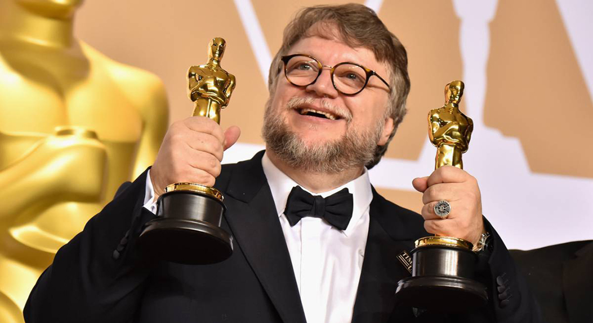
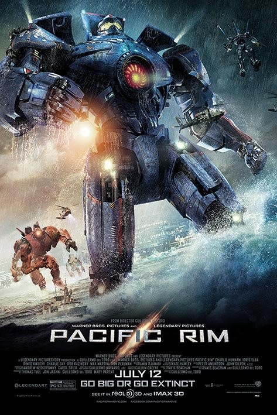
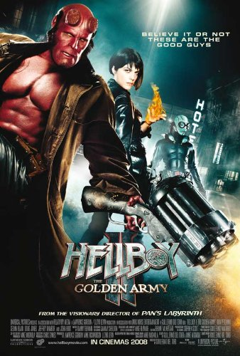
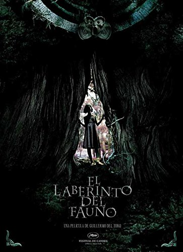
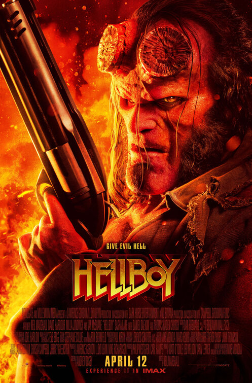
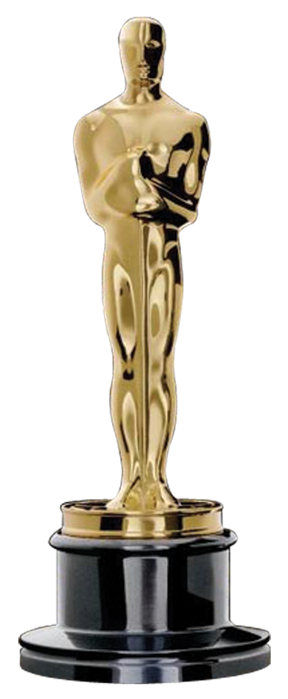

.jpg)
Guillermo del Toro Gómez
Director, guionista, productor y novelista mexicano
“Desde la infancia he sido fiel a los monstruos, me han salvado. Porque los monstruos, creo, son los santos patronos de nuestra dichosa imperfección. Y permiten y encarnan la posibilidad de fallar y vivir”.Biografía
Guillermo del Toro nació el 9 de octubre de 1964 en Guadalajara, Jalisco. Hijo de Federico del Toro y Guadalupe Gómez. Fue criado en el seno de una estricta familia católica. Cuando tenía unos ocho años de edad, comenzó a experimentar con la cámara Super 8 de su padre realizando cortometrajes. Cuando tenía unos ocho años de edad, comenzó a experimentar con la cámara Super 8 de su padre realizando cortometrajes. Estudió en el Centro de Investigación y Estudios Cinematográficos, en Guadalajara. Pasó diez años en diseño de maquillaje y formó su propia compañía Necropia antes de ser productor ejecutivo de su primer filme a los 21 años. Fue cofundador del Festival de cine de Guadalajara y creó una compañía de producción Tequila Gang. Películas

Forma del Agua
2017
La Cumbre Escarlata
2015

Titanes delPacífico
2013

Hellboy 2: El Ejercito Dorado
2008

El Laberinto del Fauno
2006

Hellboy
2004Premios

Mejor Película
La Forma del Agua
2018Mejor Director
La Forma del Agua
2018